Endpoint tree
Grouped by service and controller, with search (Ctrl+L), method and scope filters, favourites and recent endpoints.
Feature tour
Six workspaces share one catalog, one set of environments and one set of credentials. Build a request once, then verify it, repeat it with data, scale it under load and document it.
The home workspace. Pick an endpoint from the searchable tree and Rest Tester renders the right editor for every parameter and payload field.
Explorer docsGrouped by service and controller, with search (Ctrl+L), method and scope filters, favourites and recent endpoints.
Path, Query, Form and Payload JSON tabs with catalog defaults and samples. File fields get a Browse button.
Only the fields the endpoint can filter or sort on, and only operators valid for each data type. Hand-edited filters parse back into the grid.
Fresh UUIDs, ISO dates, real enum members, two values for bt, several for in and fragments for ct.
Ctrl+Enter sends the request and validates the response against the endpoint's response schema.
Body, Headers, Timeline, Request and Validation tabs. JSON is highlighted and searchable, images preview and downloads can be saved.
Every call is broken down into DNS, TCP connect, TLS and HTTP phases so slow hops stand out.
Save requests into Collections, generate cURL or Python code, or send the request straight to a suite, the Data Runner or Load Studio.

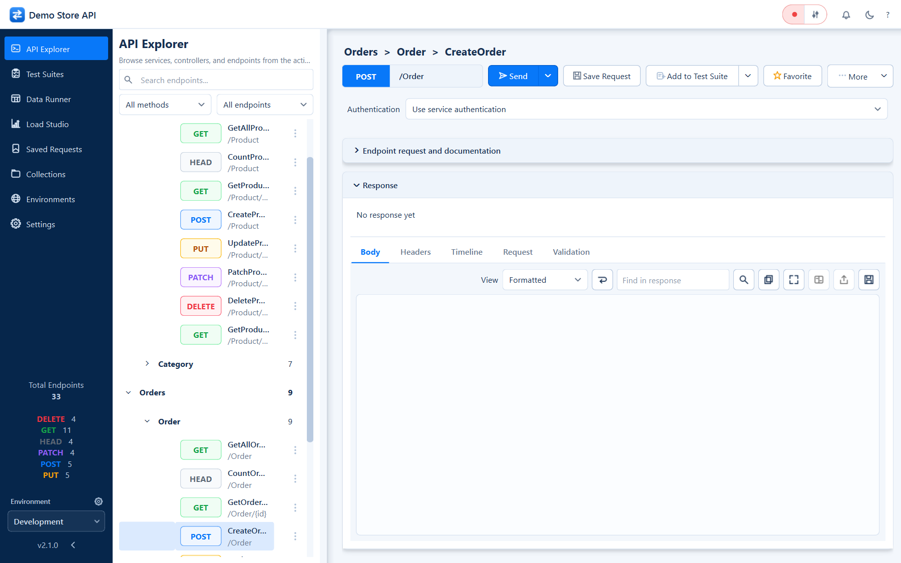
A suite is an ordered list of cases. Each case pins one endpoint with its parameters, payload, expected status and assertions.
Suite docsContains or does not contain text; matches a regular expression.
Field equals, not equals or contains; exists or absent; not empty; length equals, at least or at most; type is.
Header equals or exists, and responds within N ms.
Validate the whole response against the endpoint's response schema from the catalog.
Happy path, not found and validation failure side by side. Cases can be renamed, duplicated, reordered and disabled.
Suites are plain JSON files in suites/, so they diff cleanly in code review.
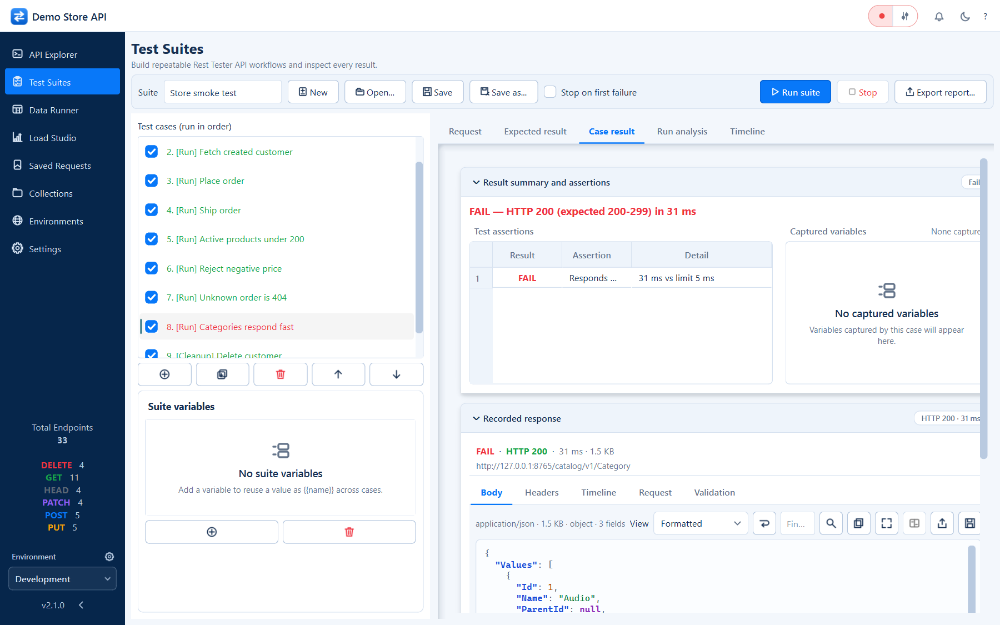
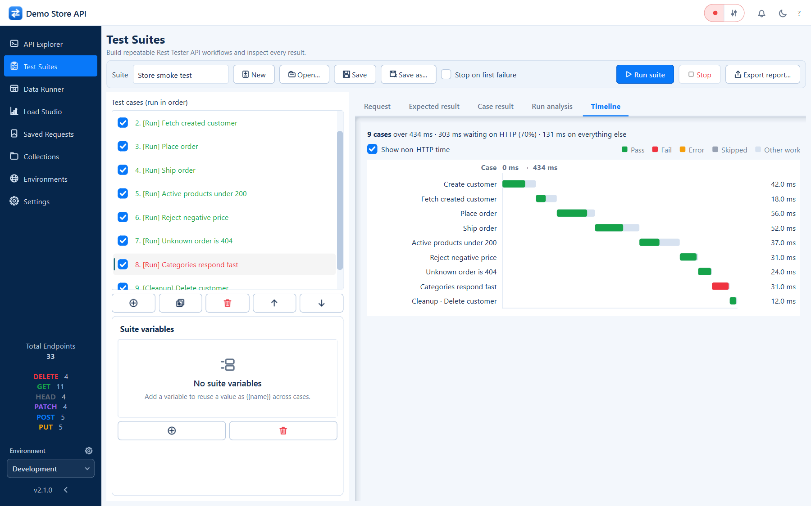
A step-by-step wizard that turns a spreadsheet into a validated batch of requests - and keeps each execution as a portable run file.
Data Runner docsPick the service and endpoint with type-ahead search, then load a CSV file.
Bind columns to path, query, header and payload fields. Matching names map automatically; values can be parsed as JSON.
Preview resolved requests and catch type or required-field problems before anything is sent.
Run with configurable concurrency, inspect each row's status, timing and response, then export.
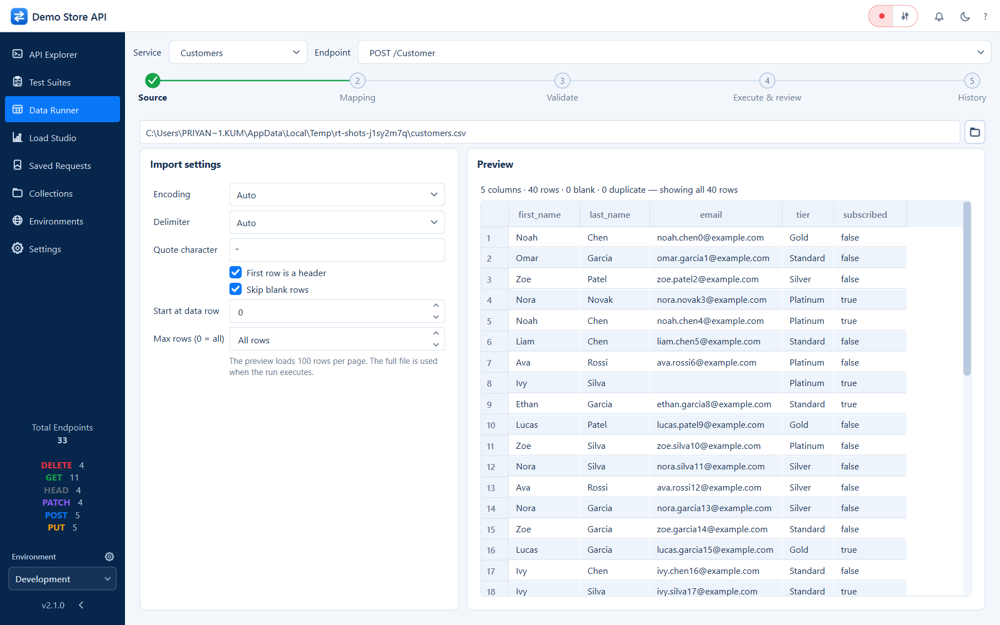
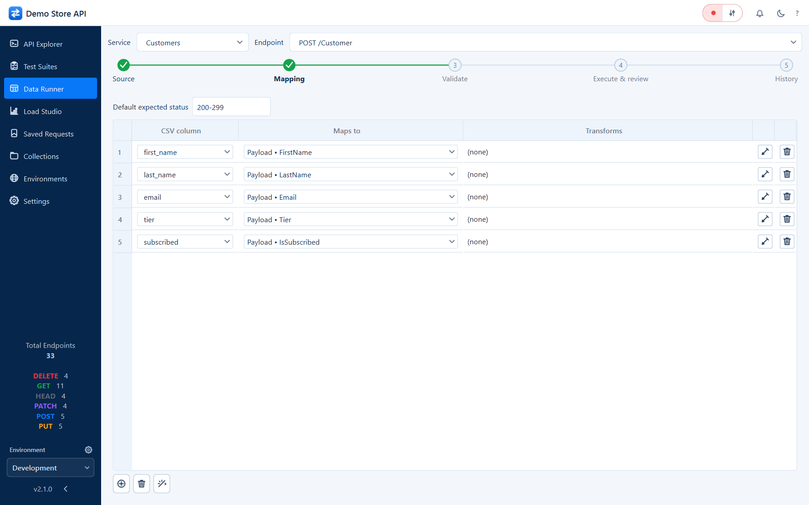
Closed-model load tests against a single endpoint, with safety limits, pass/fail thresholds and a report that explains what it found.
Load Studio docsCombine ramp-up, steady and ramp-down stages with think time to model real traffic.
Cap peak virtual users, duration and timeout; set thresholds such as error rate, P95 or P99 latency.
Throughput, average latency, P99, errors, completed requests and active users - then min / avg / max once the run ends.
A detailed final report with charts, diagnosed shortcomings, likely causes and fixes - exportable to PDF and saved as a reopenable SQLite run.
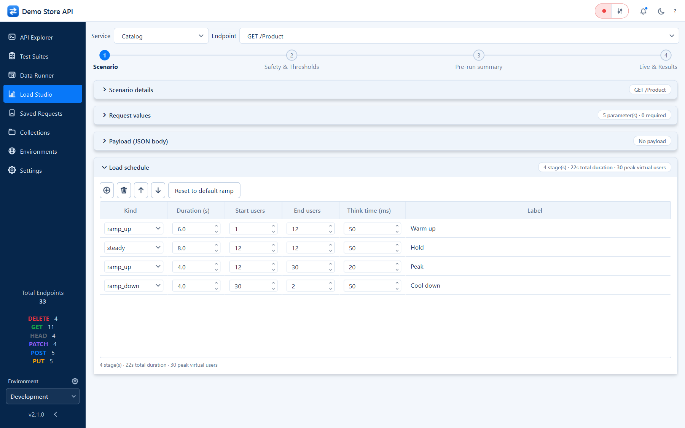

A visual editor for the catalog that powers every other workspace - or a generator that scans your service source code for you.
Catalog docsBase URLs, methods, routes, content types, parameters and allowed-value lists.
Payload, form and response schemas with nested objects, arrays and enum members.
Declare which fields filter and sort, with Text, Number, Date, Flag or LOV types.
python -m tools.generate_catalog statically scans ASP.NET Core controllers, DTOs and entity attributes.
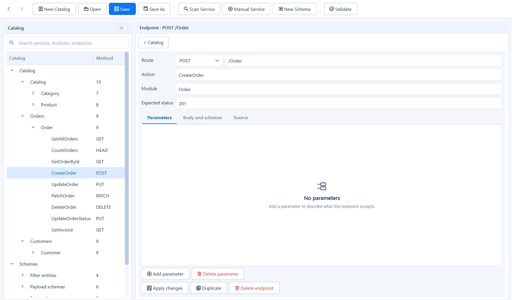

Each environment owns its base URLs, variables, headers, transport settings and credentials. Managed sign-in renews tokens for you.
Environment docsEntra ID browser sign-in with PKCE, Azure AD B2C and client credentials via MSAL.
Authorization code + PKCE, client credentials, device code, password and refresh token - Auth0, Okta, Keycloak, Google and more.
Bearer token, API key in header or query, Basic, locally signed JWT bearer and Atlassian ASAP.
Per-environment TLS verification and request timeout, plus variables substituted into requests.
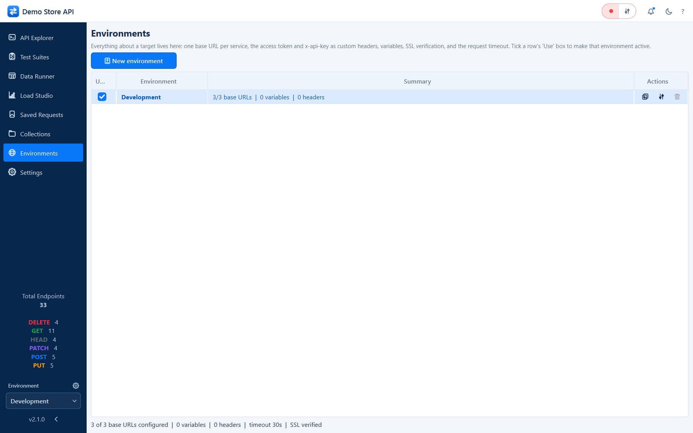
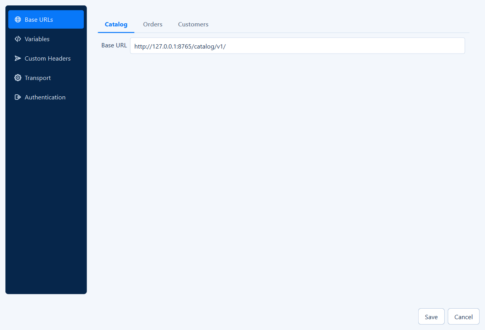
A catalog-aware assistant prepares drafts for all four testing workflows without executing your API.
Dedicated AI documentationSingle requests, suites with captures and cleanup, CSV mappings, and closed-user load profiles.
Named Ollama, Azure OpenAI, OpenAI, Claude and Sarvam AI connections, with explicit hosted opt-in.
Local retrieval, structured JSON plans and bounded repair rounds. Invalid or truncated plans cannot be opened for execution.
Sanitized Activity, per-generation token details and a persistent metadata-only ledger. Token caps are not monetary spending limits.
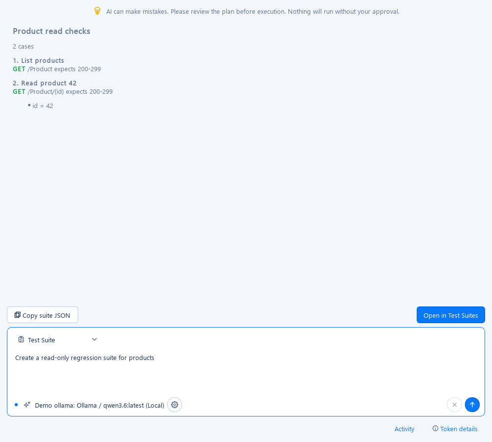
Desktop polish
Every workspace, chart and report adapts to both themes.
Panels reflow and stack at narrow widths instead of clipping.
Ctrl+Enter, Ctrl+L and Alt+←/→ for the most common actions.
Data Runner and Load Studio runs are self-contained SQLite files you can archive and share.
Version, system details and licenses, with one-click copy for bug reports.
Package a portable executable with PyInstaller - no Python needed on the target machine.
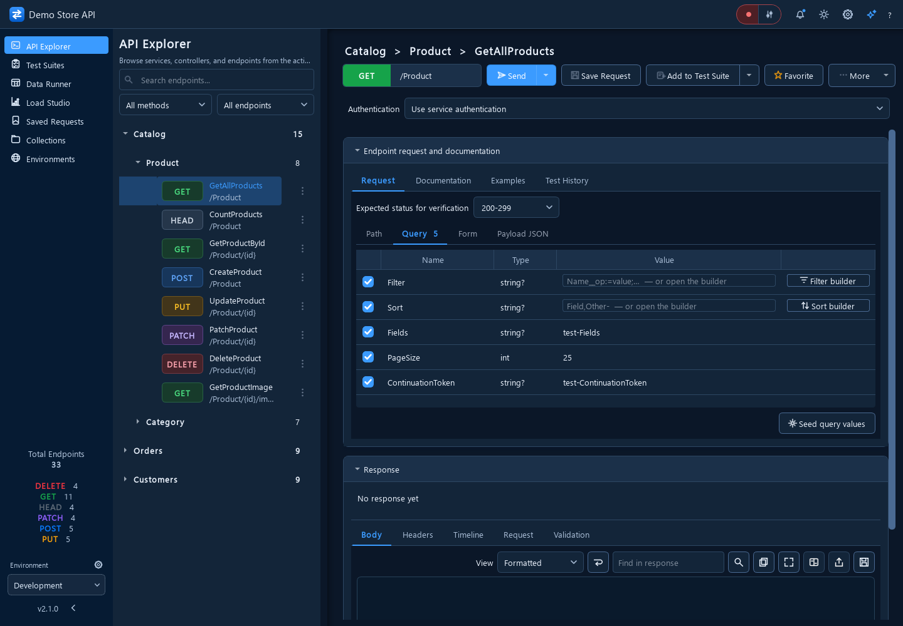
Try it on the demo API